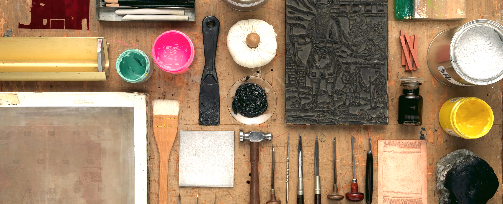
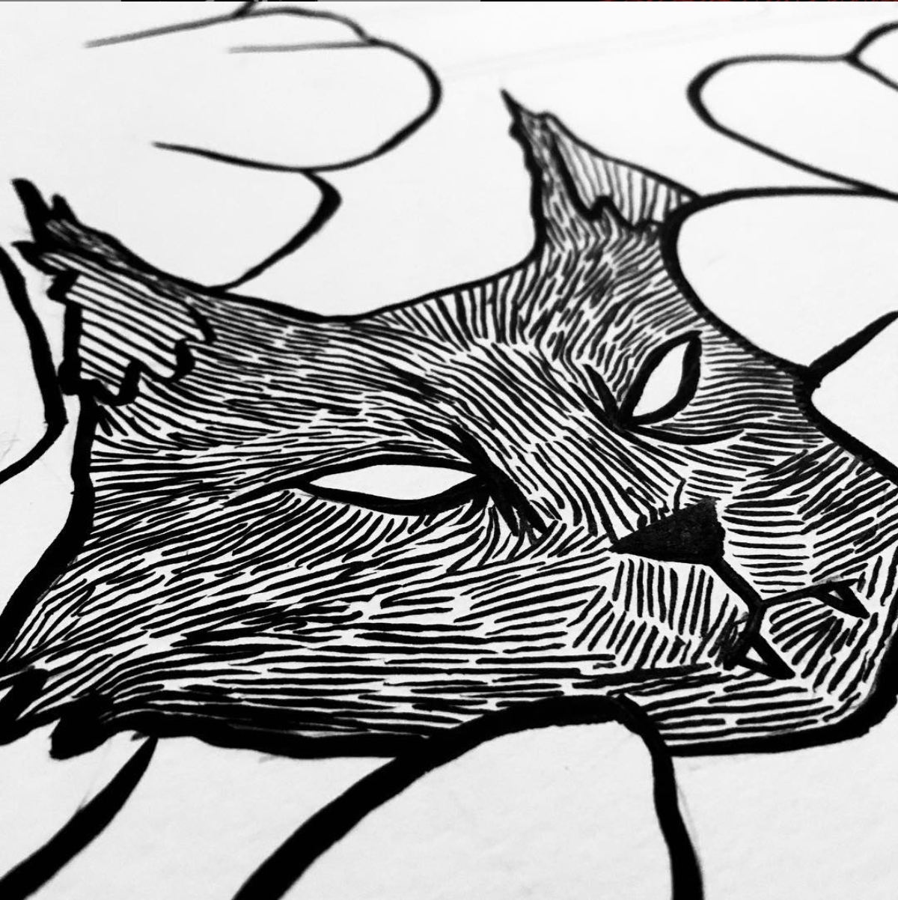

Resume
Skills
- Creative Problem Solving
- Collaboration
- Visual Design
- Personas
- Wireframing
- Storyboards
- Mentorship
- Workshop Facilitation
Experience
Austin Community College
Student Affairs Intake Assistant • 2019 – 2020
Provides excellent customer service and facilitates a diverse student body, faculty and staff with support and guidance. Effectively communicates information on processes regarding advising, application status, student services, admissions, enrollment, financial aid, and assessment to guide prospective, current and former students ensuring success. Honors the missions of ACC to ensure student success and develop community.
Industry Print Shop
Graphic Production Artist • 2017 – 2019
Collaborated with sales to determine client needs and job specifications to generate digital mockups and designs for production guaranteeing product success. Participated in the development of creative ideas and supported the Creative Director in the execution of client branding and critiques.
Whole Foods Market
Associate Graphic Artist • 2012 – 2014
Supported lead graphic artist, marketing, and administrative leadership to maintain the visual quality of a high profit store by producing engaging graphics, experiential design and illustration. Collaborated to develop, organize and prioritize floor plans and merchandising. Mentored and trained six new graphic artists for on-boarding. Provided support in aided five new store openings.
Busby Landscapes
Landscape Designer • 2014
Gathered information regarding ground sites including surveys and analysis. Made creative solutions for projects through plant selection and development of CAD designs.
Education
Austin Community College
Associates in UX/UI • 2017 – Present
Sam Houston State University
Studio Art Major, Art History Minor • 2002 – 2016
Interest
Printmaking
Illustration
Camping